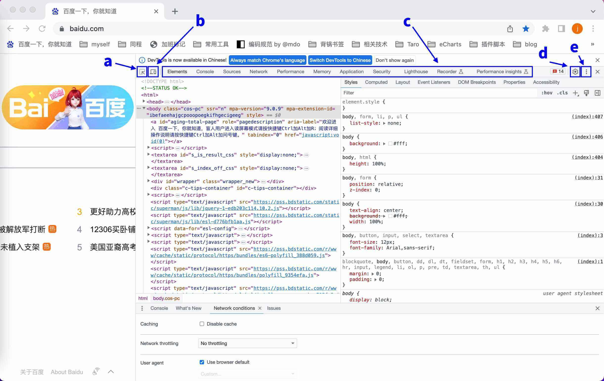
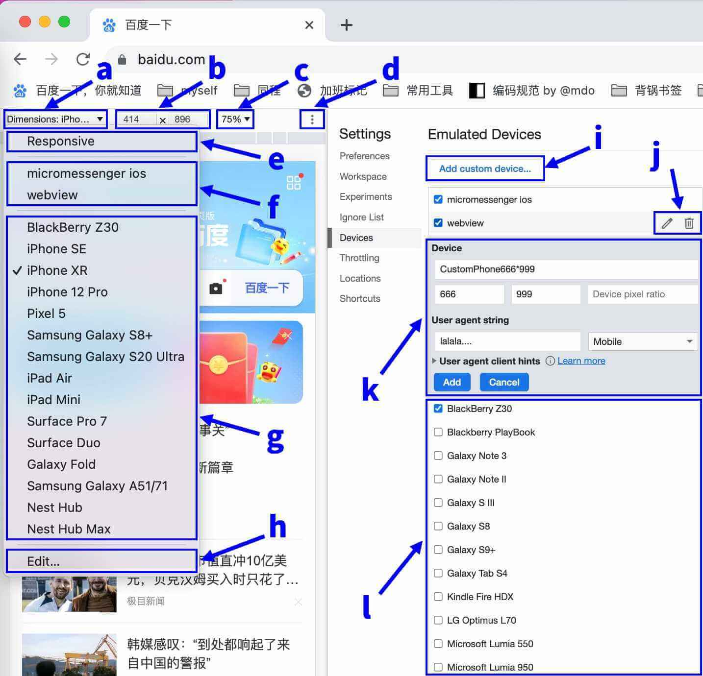
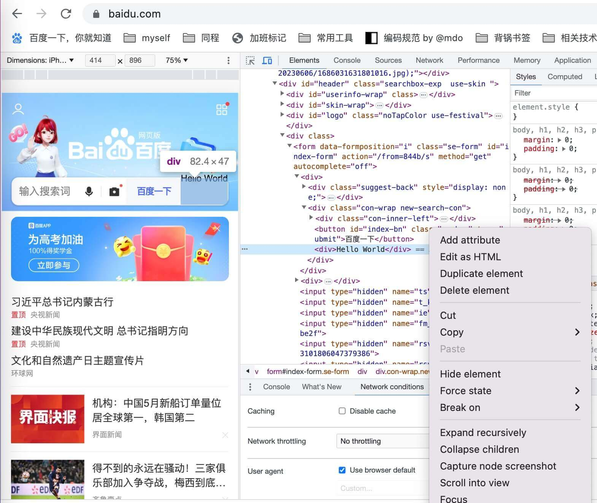
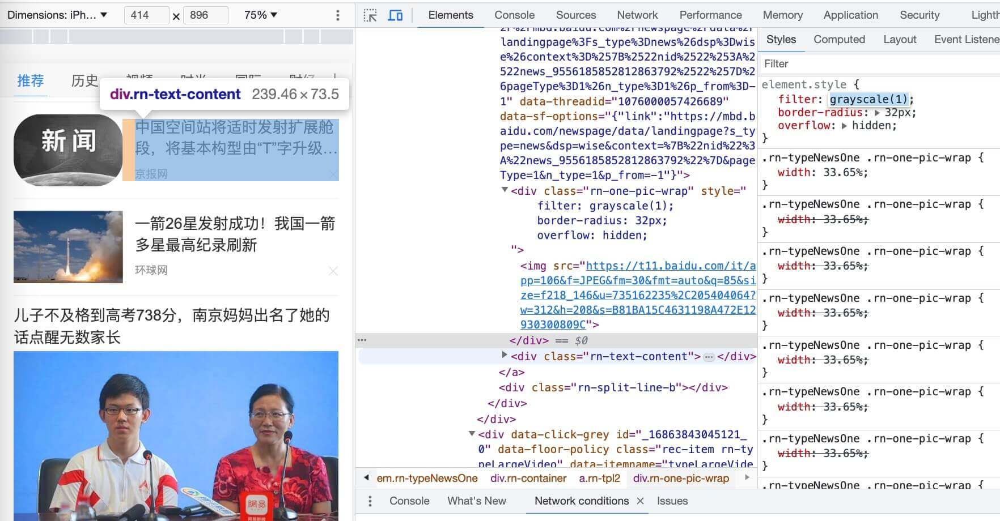
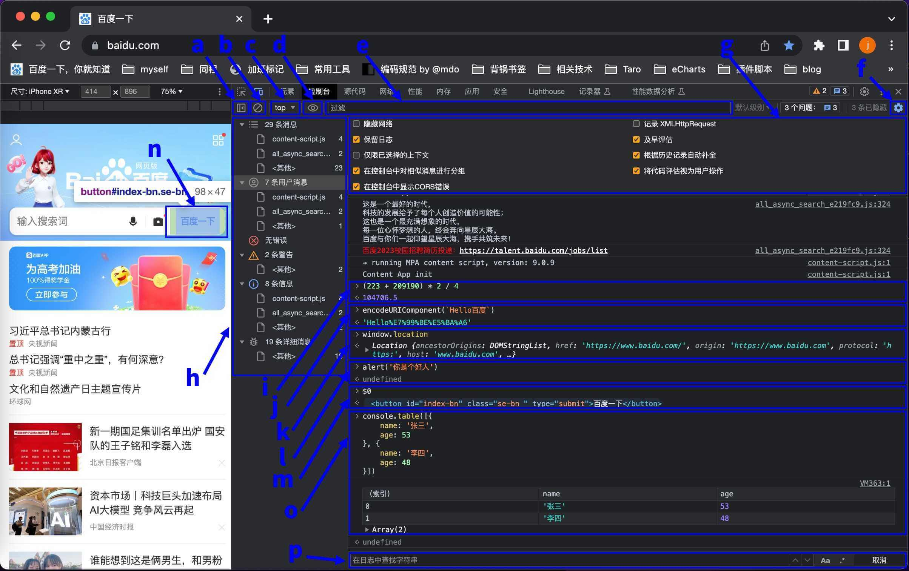
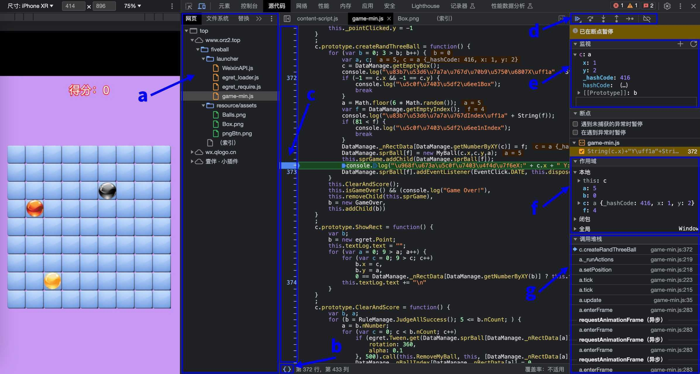
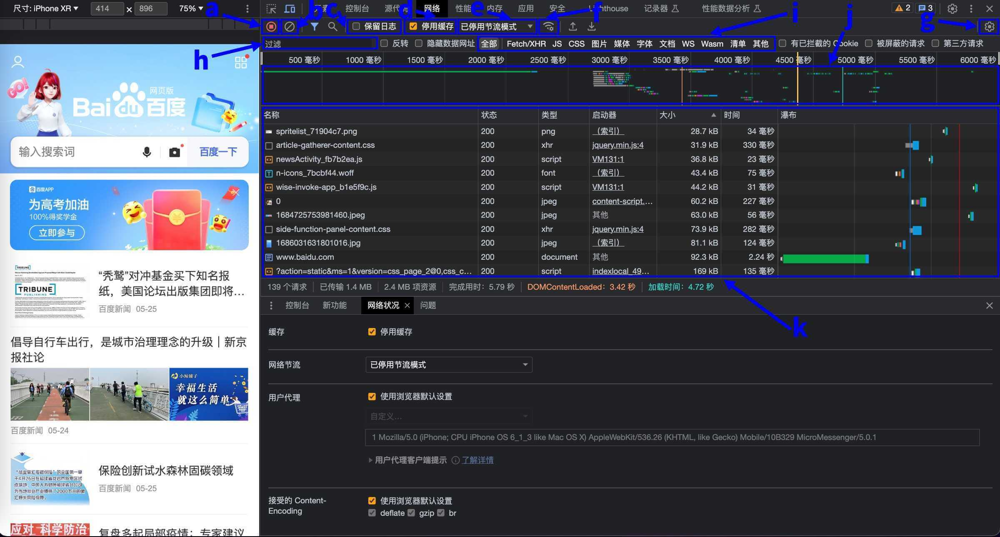

简单聊聊
作为一个尊贵的前端开发工程师，
每天都在跟浏览器打交道。
而现代化浏览器配套的开发者工具不应该只是输出日志的终端。
那么今天就抽空把自己了解或者用过的功能整理一下。
开发者工具 Devtool
想要在浏览器中打开开发者工具可以通过下面 3 种方式：
- 菜单… => 更多工具 => 开发者工具
- 页面上右键 => 检查
- 快捷键。MacOS: command + option + I ， Windows: F12
打开之后大概工具页面分为了几个区域，如下图所示：

下面就详细说一下各个区域部分的功能和作用。
a、为通过鼠标滑过页面快速定位到指定元素进行检查对应的 html/css。
当想要定位出现问题的元素的时候，可以用到该功能。
快捷键为 MacOS: command + shift + C ， Windows: ctrl + shift + C
b、显示/隐藏设备工具栏
当激活的时候为模拟移动端设备的屏幕样式。如下图所示：

a) 当前模拟设备的名称
点击此处可以弹出下拉设备切换弹窗，用以切换模拟设备。
b) 当前模拟设备的屏幕尺寸
正常情况下此处尺寸为只读。只有当设备选择为 Responsive （自定义） 时，此处可以自由修改屏幕尺寸。
c) 当前模拟设备缩放比例
建议屏幕能展示完整的情况下，尽量保持设置为 100%。
目测在非 100%的情况下，有些交互偶现不能正常模拟出来。
比如：页面点击无反应，overflow: auto;区域无法滑动等奇葩情况。
d) 模拟设备的其他操作
比如：展示/隐藏媒体查询，展示/隐藏标尺线，截屏，重置设置等。
e) 设备切换 Responsive 类型设备
可以自由修改屏幕尺寸的类型。
f) 设备切换自定义类型设备
此处可以选择之前我们配置保存好的设备。
比如此处我曾经配置了两个设备。
一个名字是 micromessenger ios，这个是模拟了 ios 手机微信内置浏览器的设备环境。
一个名字是 webview，这个是模拟了微信小程序 webview 的设备环境。
只需我们将对应的尺寸和 user agent 配置好一次，后续我们想要模拟这种设备场景，那么就可以直接使用了。
g) 设备切换浏览器内置类型设备
此处可以选择浏览器内置一些主流类型设备。
不用我们每种设备都自己去配置了， 可以优先看一下此处，
如果是有了内置的对应的类型设备，
那就省事了直接使用即可。
h) 编辑类型设备
此处点击即可弹出右侧的设备编辑面板。
即可对设备切换弹窗列表里的设备进行编辑。
i) 新增自定义类型设备
点击即可弹出2.11的新增/编辑设备面板
j) 编辑/删除自定义类型设备
点击分别为编辑/删除对应的自定义类型设备
k) 新增/编辑自定义设备面板
此处可以对自定义设备的各项参数进行调整。
比如：设备名，设备屏幕宽高尺寸，useragent 等。
设备参数修改完毕后点击对应”Add”、”Save”按钮即可保存，
记得要将设备前面的蓝色复选框勾选中，
这样才能将这个设备展示到2.6下拉设备切换弹窗的自定义类型设备列表中。
l) 浏览器内置类型设备列表
因为浏览器内置的设备比较多，
此处只需要勾选中自己平时开发所需的几种类型设备即可，
这样勾选中的设备就会展示到2.7下拉设备切换弹窗的内置类型设备列表中。
c、tab 区域【核心功能】
Element（元素）
该 tab 项主要为展示页面的节点元素信息。
a) 网页的 html 结构
此处可以看到渲染网页出来的对应 html 结构，
这里可以与command + shift + C中的快速定位到指定元素功能配合使用。
根据 DOM 树的情况，来方便快速定位问题。
同时，此处面板也支持对 DOM 的直接修改，
比如新增属性、修改 html 结构、删除节点等，如下图所示：

b) 网页的 css 样式
此处可以看到渲染网页出来的对应 css 样式，
比如当我们开发完毕之后，发现页面样式并没有生效，
那么我们就可以通过此处面板对元素进行定位后，
查看应用到元素的 css 样式是被其他优先级更高的样式覆盖了，还是样式本身书写有问题。
同时，此处面板也支持对 css 直接修改，页面就会更新刚刚书写后的 css 样式。
这样一来，节约了每次修改代码，编译打包，再看效果的时间，提升了修改样式的开发效率。
另外，css 面板也可以在本地去秀一些操作，
比如可以将页面上的这张新闻图片变为黑白图片，以及将直角改为了圆角等等，如下图所示：

Console（控制台）
该 tab 项主要为展示日志输出以及调试信息。
PS: 此处开始翻译不太动了，吃了口饭继续肝，想想干脆切换成汉化页面了。
具体页面如下图所示：

a) 展开/收起左侧日志筛选栏
b) 清空控制台数据
c) 查看控制台信息纬度
当页面中还嵌套 iframe 的时候，
想要查看 iframe 嵌套的日志信息。
那么就可以在此处切换为对应 iframe 的名字。
d) 监听变量/表达式
点击小眼睛就会新增一个监听项。
该监听项可以是一个变量，也可以是一个表达式。
那么在程序运行过程中，会动态的展示对应的数据变化。
e) 日志过滤器
如果日志过多的时候，
可以通过该过滤器输入关键字，
那么下方输出日志的时候就只会输出包含该关键字的日志。
f) 展开/收起控制台设置
通过该齿轮来切换是否展示下方的控制台设置面板。
g) 控制台设置面板
具体功能可对应汉字内容。
值得注意的是，保留日志功能较为常用。
比如，我们有场景是进入一个 A 页面，而 A 页面指定条件需要重定向到另一个 B 页面，
那么如果保留日志如果没有勾选上，那么就会只存在 B 页面的日志，而无法看到 A 页面的日志。
所以勾选之后，就可以方便 A 页面打印日志也可以看得到了。
h) 左侧日志筛选栏
根据日志的输出等级，来对日志进行筛选。
- debug: 可以在全部消息、用户消息、详细消息中展示。
- info: 可以在全部消息、用户消息、信息中展示。
- log: 可以在全部消息、用户消息、信息中展示。
- warn: 可以在全部消息、用户消息、警告中展示。
- error: 可以在全部消息、用户消息、错误中展示。
i) 控制台手写命令：正常计算
可以正常输出的数值计算。（js 会有精度丢失问题）
j) 控制台手写命令：正常调用 api
可以正常调用 js 的 api 方法。
k) 控制台手写命令：查看对象拥有的方法
可以正常查看 window.location 对象都拥有哪些方法，哪些属性。
l) 控制台手写命令：正常调用弹窗
可以正常调用弹窗方法。
m) 控制台手写命令：浏览器内置语句
此处的$0，并不是 jQuery 的方法，
而是借助浏览器command + shift + C中的快速定位到指定元素功能。
将$0指代为最近选中的元素节点。
n) 控制台手写命令：浏览器内置语句示例
此处即为上次通过定位元素定位的是这个按钮元素，
那么控制台$0输出的其实就是这个按钮元素的节点。
o) 控制台手写命令：console.table
console 不仅可以支持输出普通的文本。
- 他可以输出表格，如代码所示：
1 | // 输出一个表格 |
- 他也可以输出带样式的问题，如代码所示：
1 | // 输出一行文字， |
p) 日志搜索栏
如果日志过多的时候，
也可以通过Ctrl + F 或者command + F对日志进行搜索。
如何条件的部分会高亮现实，并且可以快速匹配位置。
Sources（源代码）
该 tab 项主要浏览器下载到本地的 js 等文件。
可以通过这个这个 tab 来对页面的 js 的逻辑进行断点、调试。
具体页面如下图所示：

a) 左侧资源树栏
b) 代码格式化按钮
很有可能我们拿到的 js 代码是经过压缩混淆过的，
所有代码都在一行，对我们阅读代码非常不利，
那么此时可以点击这个按钮，对代码进行格式化，
虽然变量名没办法还原，不过最起码可以看懂大概的代码结构。
方便我们梳理代码逻辑，以及定位问题。
c) 断点区域
跟其他的编译器相似，代码的做的区域为断点区域，
如果在代码前面打标，即为此处设置断点，
如果代码再次执行到这个位置，就会被停住，
然后方便我们来查看此时的变量状态，
以及后续代码是如何执行的。
d) 断点操作区域
跟其他编译器相似，
拥有继续放开执行，一步步调试执行，进入函数内部，消除所有断点等功能。
此处不再赘述。
e) 监听变量面板
我们可以在此处面板，如果点击+，
手动录入想要监听的关键变量名称，
那么就可以随时看到这个变量的状态，
方便我们定位问题。
f) 各维度变量面板
我们可以在此处面板，查看各纬度的变量数据。
比如作用域内，闭包内，全局变量等。
g) 调用堆栈
我们可以在此处面板，查看方法堆栈的调用情况。
比如图中所示，
即为断点此处代码，为名字叫createRandThreeBall的方法调用，
而createRandThreeBall方法，是被_runActions的方法调用，
以此类推，根据函数的调用情况，
也可以协助我们定位问题。
NetWork（网络）
该 tab 项主要为展示网络通讯的接口信息。
如果我们跟后端调试接口的阶段，就会基本都是再跟这个 tab 页打交道了。
具体页面如下图所示：

a) 录制/关闭接口通讯情况
b) 清除之前所以得接口通讯情况
c) 保留日志
其功能与控制台的保留日志相似
d) 停用缓存
有些资源的请求如果请求到之后，
会在本地浏览器进行缓存的。
如果再次请求的时候服务器时，服务器返回的信息是资源没有变化直接取本地缓存就好，
那么这样的话就不会去拿服务器的资源，而是直接就取本地之前的缓存资源。
而这一项勾选之后，就不会再用缓存。
e) 网络节流模式
通过该功能可以本地模拟各种网络状况。
浏览器内部内置了高速3G、低速3G、离线三种模式，
那么如果这三种模式不能满足项目需求，
我们也可以通过设置页面对节流策略进行设置，
配置网络上行、下行速度，以及延迟情况。
设置好后自定义好模式名称，就可以在此处直接应用了。
f) 展开/收起网络详细配置面板
比如：缓存、网络节流模式、用户代理、接受的 Content-Encoding。
g) 展开/收起网络其他配置面板
比如：使用大量请求行、按框架分组、显示概览、截取屏幕截图。
h) 接口过滤器
如果接口过多的时候，
可以通过该过滤器输入关键字，
那么下方输出接口信息的时候就只会输出包含该关键字的接口请求。
i) 类型过滤器
如果接口过多的时候，
可以通过该过滤器选择请求类型，
对接口请求信息进行过滤。
比如：只查看 Fetch/XHR 请求，或者只查看请求的 js 文件等。
j) 瀑布图过滤器
可以看到所有接口请求的一个瀑布图。
每一条即为一条请求。
条的长度越长即为请求的时间越长。
如果同一个时间段有好几条线，那说明这几个请求时并行进行请求的。
那么我们也可以对指定时间段进行过滤。
比如说，我只想看到 5s-10s 内的接口请求数据，
可以鼠标在瀑布图上，将这个时间段选中，下方的接口请求数据，即为这个时间段的请求接口。
k) 接口请求详表
在这个表格内可以查看到接口请求的全部信息。
比如请求接口 url、状态码、返回结构体大小、请求时间等信息。
以及当我们定位到我们想要查看的接口的时候，
我们可以左键点击这个接口，就会看到这个接口更为详细的信息。
比如：header、body、require、response 等信息。
Performance（性能）
该 tab 项主要为检测页面加载、交互等操作进行录制，
然后分析这段时间浏览器交互渲染的耗时情况，
进而定位那些耗时高的操作是哪些，来针对性的进行优化，
从而达到提高性能，优化用户体验的目的。
Memory（内存）
该 tab 项看起来应该是内存相关，没太用过。
后面如果有机会用到了再来完善这部分介绍。
Application（应用）
该 tab 项主要是查看应用缓存，比如说我们最常用的。
- local storage 本地永久缓存
- session storage 本地会话缓存
- Cookie
其他功能没太用过。
后面如果有机会用到了再来完善这部分介绍。
Security（安全）
该 tab 项看起来应该是安全相关，没太用过。
后面如果有机会用到了再来完善这部分介绍。
Lighthouse
该 tab 项看起来不知道是个啥，没太用过。
后面如果有机会用到了再来完善这部分介绍。
（记录器）
该 tab 项看起来不知道是个啥，没太用过。
后面如果有机会用到了再来完善这部分介绍。
（性能数据分析）
该 tab 项看起来不知道是个啥，没太用过。
后面如果有机会用到了再来完善这部分介绍。
d、Devtool 的相关设置
Preferences （偏好配置）
此处就是一般工具都会有的通用设置面板。
比如面板使用的主题：跟随系统、浅色、深色。
比如工具上使用的语言：英文、中文等。
值得注意的是，此处有个 Disable JavaScript 勾选框，
默认是不被勾选的，意味着允许浏览器运行 js。
那么比如说遇到一些不让复制的网站想要复制些文本的时候，
而屏蔽复制的功能大部分都是由 js 来实现的，
那么就可以简单的利用一下这个功能。
把 js 关闭后，在对文本进行复制，然后再重新开启 js 即可。
（仅适合绕过简单限制，有些网站也会在文本里放入各种隐形字符来防止我们非法复制）
Workspace （工作区）
看起来是个工作区的什么东西，没太用过。
后面如果有机会用到了再来完善这部分介绍。
Experiments （实验）
看起来不知道是个啥，没太用过。
后面如果有机会用到了再来完善这部分介绍。
Ignore List （忽略列表）
看起来不知道是个啥，没太用过。
后面如果有机会用到了再来完善这部分介绍。
Devices （模拟设备）
用来配置模拟设备编辑面板，上述2.8讲过，不再赘述。
Throttling （节流）
用来配置网络自定义节流策略编辑面板。
Locations （自定义位置）
用来配置定位自定义策略编辑面板。
Shortcuts （快捷键）
用来配置相关的快捷键。
e、Devtool 的其他功能
如：各个面板的布局调整等。
后记
其实这样细致的过了一遍所有的面板功能之后，
发现自己还是有很大一部分功能都没有使用过，
用过的功能有些还没有太用透，
em…路漫漫其修远兮，吾将上下而求索，
看样子要学习的东西还是很多。
本篇文章剩余的残卷部分，
我会后续有新的理解感悟之后，再继续更新完善。